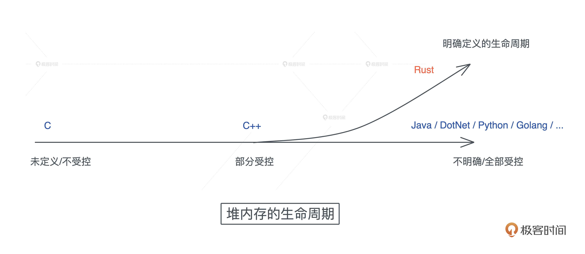
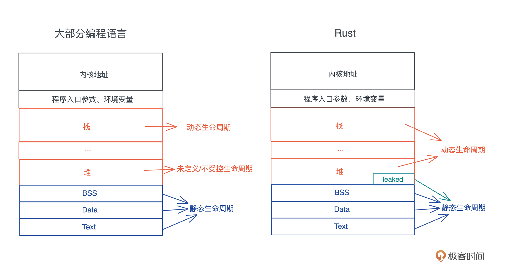
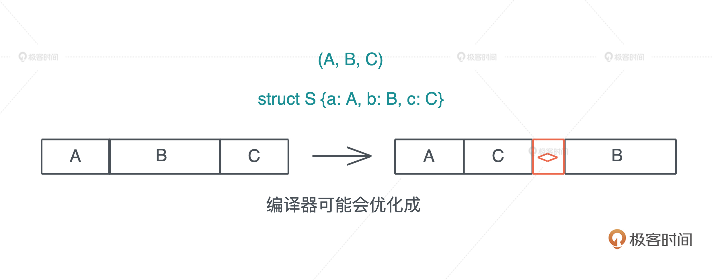
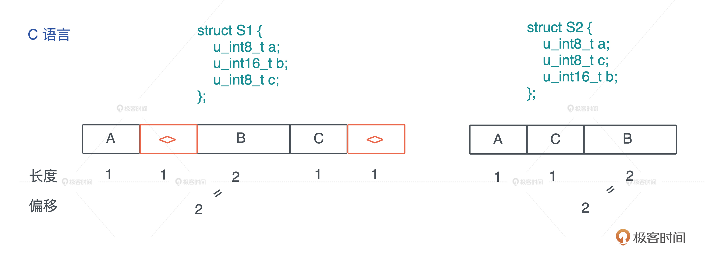
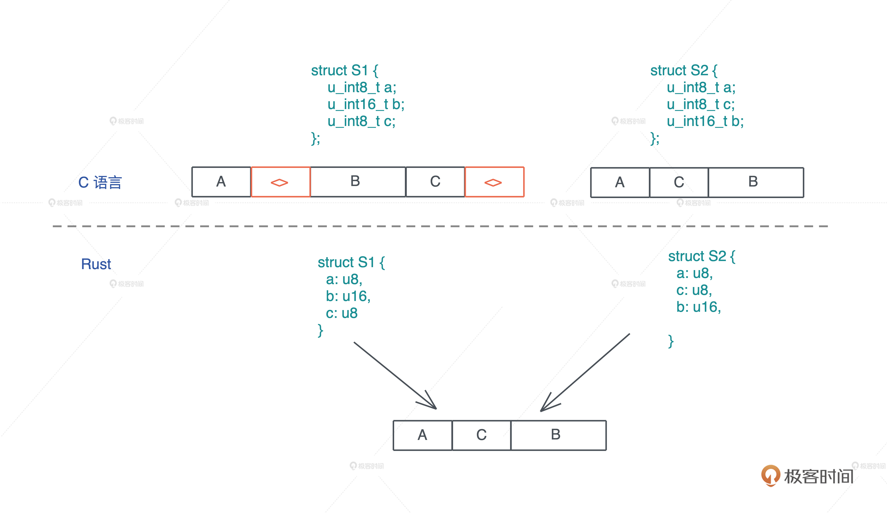
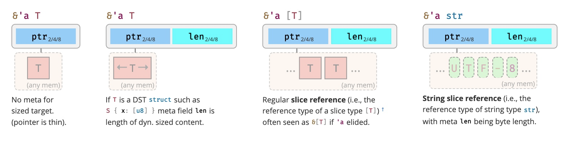
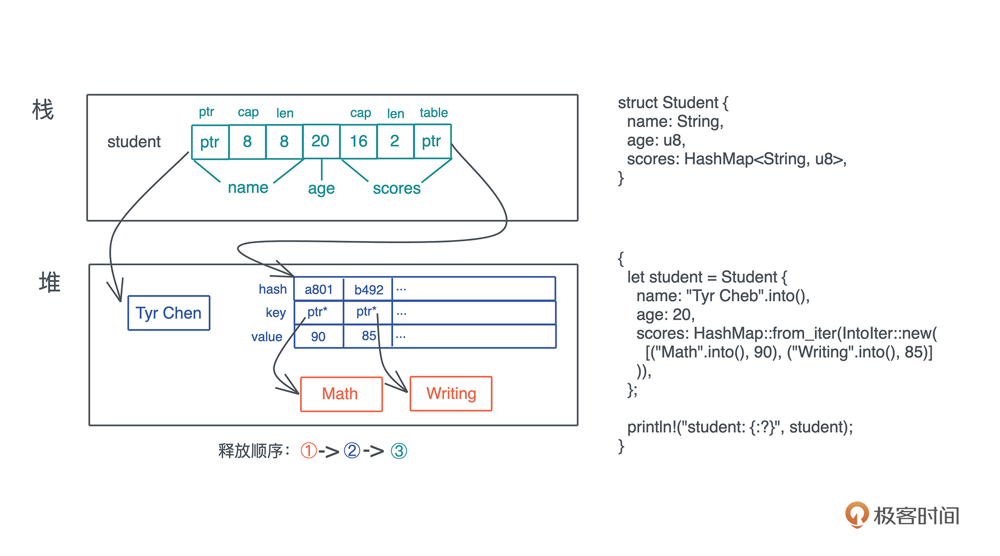
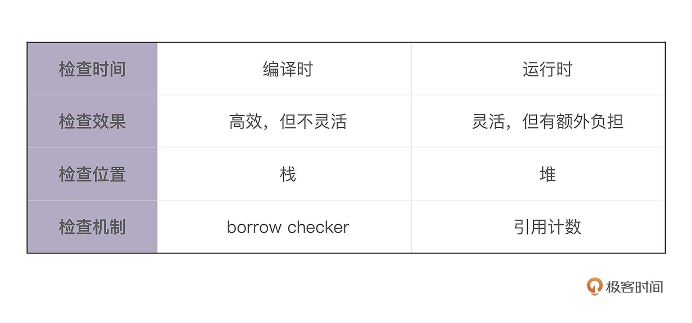

- 00 开篇词 让Rust成为你的下一门主力语言.md
- 01 内存：值放堆上还是放栈上，这是一个问题.md
- 02 串讲：编程开发中，那些你需要掌握的基本概念.md
- 03 初窥门径：从你的第一个Rust程序开始！.md
- 04 get hands dirty：来写个实用的CLI小工具.md
- 05 get hands dirty：做一个图片服务器有多难？.md
- 06 get hands dirty：SQL查询工具怎么一鱼多吃？.md
- 07 所有权：值的生杀大权到底在谁手上？.md
- 08 所有权：值的借用是如何工作的？.md
- 09 所有权：一个值可以有多个所有者么？.md
- 10 生命周期：你创建的值究竟能活多久？.md
- 11 内存管理：从创建到消亡，值都经历了什么？.md
- 12 类型系统：Rust的类型系统有什么特点？.md
- 13 类型系统：如何使用trait来定义接口？.md
- 14 类型系统：有哪些必须掌握的trait？.md
- 15 数据结构：这些浓眉大眼的结构竟然都是智能指针？.md
- 16 数据结构：Vec_T_、&[T]、Box_[T]_ ，你真的了解集合容器么？.md
- 17 数据结构：软件系统核心部件哈希表，内存如何布局？.md
- 18 错误处理：为什么Rust的错误处理与众不同？.md
- 19 闭包：FnOnce、FnMut和Fn，为什么有这么多类型？.md
- 20 4 Steps ：如何更好地阅读Rust源码？.md
- 21 阶段实操（1）：构建一个简单的KV server-基本流程.md
- 22 阶段实操（2）：构建一个简单的KV server-基本流程.md
- 23 类型系统：如何在实战中使用泛型编程？.md
- 24 类型系统：如何在实战中使用trait object？.md
- 25 类型系统：如何围绕trait来设计和架构系统？.md
- 26 阶段实操（3）：构建一个简单的KV server-高级trait技巧.md
- 27 生态系统：有哪些常有的Rust库可以为我所用？.md
- 28 网络开发（上）：如何使用Rust处理网络请求？.md
- 29 网络开发（下）：如何使用Rust处理网络请求？.md
- 30 Unsafe Rust：如何用C++的方式打开Rust？.md
- 31 FFI：Rust如何和你的语言架起沟通桥梁？.md
- 32 实操项目：使用PyO3开发Python3模块.md
- 33 并发处理（上）：从atomics到Channel，Rust都提供了什么工具？.md
- 34 并发处理（下）：从atomics到Channel，Rust都提供了什么工具？.md
- 35 实操项目：如何实现一个基本的MPSC channel？.md
- 36 阶段实操（4）：构建一个简单的KV server-网络处理.md
- 37 阶段实操（5）：构建一个简单的KV server-网络安全.md
- 38 异步处理：Future是什么？它和async_await是什么关系？.md
- 39 异步处理：async_await内部是怎么实现的？.md
- 40 异步处理：如何处理异步IO？.md
- 41 阶段实操（6）：构建一个简单的KV server-异步处理.md
- 42 阶段实操（7）：构建一个简单的KV server-如何做大的重构？.md
- 43 生产环境：真实世界下的一个Rust项目包含哪些要素？.md
- 44 数据处理：应用程序和数据如何打交道？.md
- 45 阶段实操（8）：构建一个简单的KV server-配置_测试_监控_CI_CD.md
- 46 软件架构：如何用Rust架构复杂系统？.md
- 加餐 Rust2021版次问世了！.md
- 加餐 代码即数据：为什么我们需要宏编程能力？.md
- 加餐 宏编程（上）：用最“笨”的方式撰写宏.md
- 加餐 宏编程（下）：用 syn_quote 优雅地构建宏.md
- 加餐 愚昧之巅：你的Rust学习常见问题汇总.md
- 加餐 期中测试：参考实现讲解.md
- 加餐 期中测试：来写一个简单的grep命令行.md
- 加餐 这个专栏你可以怎么学，以及Rust是否值得学？.md
- 大咖助场 开悟之坡（上）：Rust的现状、机遇与挑战.md
- 大咖助场 开悟之坡（下）：Rust的现状、机遇与挑战.md
- 特别策划 学习锦囊（一）：听听课代表们怎么说.md
- 特别策划 学习锦囊（三）：听听课代表们怎么说.md
- 特别策划 学习锦囊（二）：听听课代表们怎么说.md
- 用户故事 绝望之谷：改变从学习开始.md
- 用户故事 语言不仅是工具，还是思维方式.md
- 结束语 永续之原：Rust学习，如何持续精进？.md
11 内存管理：从创建到消亡，值都经历了什么？
你好，我是陈天。
初探 Rust 以来，我们一直在学习有关所有权和生命周期的内容，想必现在，你对 Rust 内存管理的核心思想已经有足够理解了。
通过单一所有权模式，Rust 解决了堆内存过于灵活、不容易安全高效地释放的问题，既避免了手工释放内存带来的巨大心智负担和潜在的错误；又避免了全局引入追踪式 GC 或者 ARC 这样的额外机制带来的效率问题。
不过所有权模型也引入了很多新概念，从 Move/Copy/Borrow 语义到生命周期管理，所以学起来有些难度。
但是，你发现了吗，其实大部分新引入的概念，包括 Copy 语义和值的生命周期，在其它语言中都是隐式存在的，只不过 Rust 把它们定义得更清晰，更明确地界定了使用的范围而已。
今天我们沿着之前的思路，先梳理和总结 Rust 内存管理的基本内容，然后从一个值的奇幻之旅讲起，看看在内存中，一个值，从创建到消亡都经历了什么，把之前讲的融会贯通。
到这里你可能有点不耐烦了吧，怎么今天又要讲内存的知识。其实是因为，内存管理是任何编程语言的核心，重要性就像武学中的内功。只有当我们把数据在内存中如何创建、如何存放、如何销毁弄明白，之后阅读代码、分析问题才会有一种游刃有余的感觉。
内存管理
我们在[第一讲]说过堆和栈，它们是代码中使用内存的主要场合。
栈内存“分配”和“释放”都很高效，在编译期就确定好了，因而它无法安全承载动态大小或者生命周期超出帧存活范围外的值。所以，我们需要运行时可以自由操控的内存，也就是堆内存，来弥补栈的缺点。
堆内存足够灵活，然而堆上数据的生命周期该如何管理，成为了各门语言的心头大患。
C 采用了未定义的方式，由开发者手工控制；C++ 在 C 的基础上改进，引入智能指针，半手工半自动。Java 和 DotNet 使用 GC 对堆内存全面接管，堆内存进入了受控（managed）时代。所谓受控代码（managed code），就是代码在一个“运行时”下工作，由运行时来保证堆内存的安全访问。
整个堆内存生命周期管理的发展史如下图所示：
而Rust 的创造者们，重新审视了堆内存的生命周期，发现大部分堆内存的需求在于动态大小，小部分需求是更长的生命周期。所以它默认将堆内存的生命周期和使用它的栈内存的生命周期绑在一起，并留了个小口子 leaked机制，让堆内存在需要的时候，可以有超出帧存活期的生命周期。
我们看下图的对比总结：- 
有了这些基本的认知，我们再看看在值的创建、使用和销毁的过程中， Rust 是如何管理内存的。
希望学完今天的内容之后，看到一个 Rust 的数据结构，你就可以在脑海中大致浮现出，这个数据结构在内存中的布局：哪些字段在栈上、哪些在堆上，以及它大致的大小。
值的创建
当我们为数据结构创建一个值，并将其赋给一个变量时，根据值的性质，它有可能被创建在栈上，也有可能被创建在堆上。
简单回顾一下，我们在[第一]、[第二讲]说过，理论上，编译时可以确定大小的值都会放在栈上，包括 Rust 提供的原生类型比如字符、数组、元组（tuple）等，以及开发者自定义的固定大小的结构体（struct）、枚举（enum） 等。
如果数据结构的大小无法确定，或者它的大小确定但是在使用时需要更长的生命周期，就最好放在堆上。
接下来我们来看 struct/enum/vec
struct
Rust 在内存中排布数据时，会根据每个域的对齐（aligment）对数据进行重排，使其内存大小和访问效率最好。比如，一个包含 A、B、C 三个域的 struct，它在内存中的布局可能是 A、C、B：
为什么 Rust 编译器会这么做呢？
我们先看看 C 语言在内存中表述一个结构体时遇到的问题。来写一段代码，其中两个数据结构 S1 和 S2 都有三个域 a、b、c，其中 a 和 c 是 u8，占用一个字节，b 是 u16，占用两个字节。S1 在定义时顺序是 a、b、c，而 S2 在定义时顺序是 a、c、b：
猜猜看 S1 和 S2 的大小是多少？
#include <stdio.h>
struct S1 {
u_int8_t a;
u_int16_t b;
u_int8_t c;
};
struct S2 {
u_int8_t a;
u_int8_t c;
u_int16_t b;
};
void main() {
printf("size of S1: %d, S2: %d", sizeof(struct S1), sizeof(struct S2));
}
正确答案是：6 和 4。
为什么明明只用了 4 个字节，S1 的大小却是 6 呢？这是因为 CPU 在加载不对齐的内存时，性能会急剧下降，所以要避免用户定义不对齐的数据结构时，造成的性能影响。
对于这个问题，C 语言会对结构体会做这样的处理：
- 首先确定每个域的长度和对齐长度，原始类型的对齐长度和类型的长度一致。
- 每个域的起始位置要和其对齐长度对齐，如果无法对齐，则添加 padding 直至对齐。
- 结构体的对齐大小和其最大域的对齐大小相同，而结构体的长度则四舍五入到其对齐的倍数。
字面上看这三条规则，你是不是觉得像绕口令，别担心，我们结合刚才的代码再来看，其实很容易理解。
对于 S1，字段 a 是 u8 类型，所以其长度和对齐都是 1，b 是 u16，其长度和对齐是 2。然而因为 a 只占了一个字节，b 的偏移是 1，根据第二条规则，起始位置和 b 的长度无法对齐，所以编译器会添加一个字节的 padding，让 b 的偏移为 2，这样 b 就对齐了。
随后 c 长度和对齐都是 1，不需要 padding。这样算下来，S1 的大小是 5，但根据上面的第三条规则，S1 的对齐是 2，和 5 最接近的“2 的倍数”是 6，所以 S1 最终的长度是 6。其实，这最后一条规则是为了让 S1 放在数组中，可以有效对齐。
所以，如果结构体的定义考虑地不够周全，会为了对齐浪费很多空间。我们看到，保存同样的数据，S1 和 S2 的大小相差了 50%。
使用 C 语言时，定义结构体的最佳实践是，充分考虑每一个域的对齐，合理地排列它们，使其内存使用最高效。这个工作由开发者做会很费劲，尤其是嵌套的结构体，需要仔细地计算才能得到最优解。
而 Rust 编译器替我们自动完成了这个优化，这就是为什么 Rust 会自动重排你定义的结构体，来达到最高效率。我们看同样的代码，在 Rust 下，S1 和 S2 大小都是 4（代码）：
use std::mem::{align_of, size_of};
struct S1 {
a: u8,
b: u16,
c: u8,
}
struct S2 {
a: u8,
c: u8,
b: u16,
}
fn main() {
println!("sizeof S1: {}, S2: {}", size_of::<S1>(), size_of::<S2>());
println!("alignof S1: {}, S2: {}", align_of::<S1>(), align_of::<S2>());
}
你也可以看这张图来直观对比， C 和 Rust 的行为：
虽然，Rust 编译器默认为开发者优化结构体的排列，但你也可以使用#[repr] 宏，强制让 Rust 编译器不做优化，和 C 的行为一致，这样，Rust 代码可以方便地和 C 代码无缝交互。
在明白了 Rust 下 struct 的布局后（ tuple 类似），我们看看 enum 。
enum
enum 我们之前讲过，在 Rust 下它是一个标签联合体（tagged union），它的大小是标签的大小，加上最大类型的长度。
[第三讲]基础语法中，我们定义 enum 数据结构时，简单提到有 Option
根据刚才说的三条对齐规则，tag 后的内存，会根据其对齐大小进行对齐，所以对于 Option
下图展示了 enum、Option
值得注意的是，Rust 编译器会对 enum 做一些额外的优化，让某些常用结构的内存布局更紧凑。我们先来写一段代码，帮你更好地了解不同数据结构占用的大小（代码）：
use std::collections::HashMap;
use std::mem::size_of;
enum E {
A(f64),
B(HashMap<String, String>),
C(Result<Vec<u8>, String>),
}
// 这是一个声明宏，它会打印各种数据结构本身的大小，在 Option 中的大小，以及在 Result 中的大小
macro_rules! show_size {
(header) => {
println!(
"{:<24} {:>4} {} {}",
"Type", "T", "Option<T>", "Result<T, io::Error>"
);
println!("{}", "-".repeat(64));
};
($t:ty) => {
println!(
"{:<24} {:4} {:8} {:12}",
stringify!($t),
size_of::<$t>(),
size_of::<Option<$t>>(),
size_of::<Result<$t, std::io::Error>>(),
)
};
}
fn main() {
show_size!(header);
show_size!(u8);
show_size!(f64);
show_size!(&u8);
show_size!(Box<u8>);
show_size!(&[u8]);
show_size!(String);
show_size!(Vec<u8>);
show_size!(HashMap<String, String>);
show_size!(E);
}
这段代码包含了一个声明宏（declarative macro）show_size，我们先不必管它。运行这段代码时，你会发现，Option 配合带有引用类型的数据结构，比如 &u8、Box、Vec、HashMap ，没有额外占用空间，这就很有意思了。
Type T Option<T> Result<T, io::Error>
----------------------------------------------------------------
u8 1 2 24
f64 8 16 24
&u8 8 8 24
Box<u8> 8 8 24
&[u8] 16 16 24
String 24 24 32
Vec<u8> 24 24 32
HashMap<String, String> 48 48 56
E 56 56 64
对于 Option 结构而言，它的 tag 只有两种情况：0 或 1， tag 为 0 时，表示 None，tag 为 1 时，表示 Some。
正常来说，当我们把它和一个引用放在一起时，虽然 tag 只占 1 个 bit，但 64 位 CPU 下，引用结构的对齐是 8，所以它自己加上额外的 padding，会占据 8 个字节，一共16字节，这非常浪费内存。怎么办呢？
Rust 是这么处理的，我们知道，引用类型的第一个域是个指针，而指针是不可能等于 0 的，但是我们可以复用这个指针：当其为 0 时，表示 None，否则是 Some，减少了内存占用，这是个非常巧妙的优化，我们可以学习。
vec 和 String
从刚才代码的结果中，我们也看到 String 和 Vec
而 Vec
很多动态大小的数据结构，在创建时都有类似的内存布局：栈内存放的胖指针，指向堆内存分配出来的数据，我们之前介绍的 Rc 也是如此。
关于值在创建时的内存布局，今天就先讲这么多。如果你对其它数据结构的内存布局感兴趣，可以访问 cheats.rs，它是 Rust 语言的备忘清单，非常适合随时翻阅。比如，引用类型的内存布局：
现在，值已经创建成功了，我们对它的内存布局有了足够的认识。那在使用期间，它的内存会发生什么样的变化呢，我们接着看。
值的使用
在讲所有权的时候，我们知道了，对 Rust 而言，一个值如果没有实现 Copy，在赋值、传参以及函数返回时会被 Move。
其实 Copy 和 Move 在内部实现上，都是浅层的按位做内存复制，只不过 Copy 允许你访问之前的变量，而 Move 不允许。我们看图：
在我们的认知中，内存复制是个很重的操作，效率很低。确实是这样，如果你的关键路径中的每次调用，都要复制几百 k 的数据，比如一个大数组，是很低效的。
但是，如果你要复制的只是原生类型（Copy）或者栈上的胖指针（Move），不涉及堆内存的复制也就是深拷贝（deep copy），那这个效率是非常高的，我们不必担心每次赋值或者每次传参带来的性能损失。
所以，无论是 Copy 还是 Move，它的效率都是非常高的。
不过也有一个例外，要说明：对栈上的大数组传参，由于需要复制整个数组，会影响效率。所以，一般我们建议在栈上不要放大数组，如果实在需要，那么传递这个数组时，最好用传引用而不是传值。
在使用值的过程中，除了 Move，你还需要注意值的动态增长。因为Rust 下，集合类型的数据结构，都会在使用过程中自动扩展。
以一个 Vecshrink_to_fit 方法，来节约对内存的使用。
值的销毁
好，这个值的旅程已经过半，创建和使用都已经讲完了，最后我们谈谈值的销毁。
之前笼统地谈到，当所有者离开作用域，它拥有的值会被丢弃。那从代码层面讲，Rust 到底是如何丢弃的呢？
这里用到了 Drop trait。Drop trait 类似面向对象编程中的析构函数，当一个值要被释放，它的 Drop trait 会被调用。比如下面的代码，变量 greeting 是一个字符串，在退出作用域时，其 drop() 函数被自动调用，释放堆上包含 “hello world” 的内存，然后再释放栈上的内存：
如果要释放的值是一个复杂的数据结构，比如一个结构体，那么这个结构体在调用 drop() 时，会依次调用每一个域的 drop() 函数，如果域又是一个复杂的结构或者集合类型，就会递归下去，直到每一个域都释放干净。
我们可以看这个例子：
代码中的 student 变量是一个结构体，有 name、age、scores。其中 name 是 String，scores 是 HashMap，它们本身需要额外 drop()。又因为 HashMap 的 key 是 String，所以还需要进一步调用这些 key 的 drop()。整个释放顺序从内到外是：先释放 HashMap 下的 key，然后释放 HashMap 堆上的表结构，最后释放栈上的内存。
堆内存释放
所有权机制规定了，一个值只能有一个所有者，所以在释放堆内存的时候，整个过程简单清晰，就是单纯调用 Drop trait，不需要有其他顾虑。这种对值安全，也没有额外负担的释放能力，是 Rust 独有的。
我觉得 Rust 在内存管理方面的设计特别像蚁群。在蚁群中，每个个体的行为都遵循着非常简单死板的规范，最终，大量简单的个体能构造出一个高效且不出错的系统。
反观其它语言，每个个体或者说值，都非常灵活，引用传来传去，最终却构造出来一个很难分析的复杂系统。单靠编译器无法决定，每个值在各个作用域中究竟能不能安全地释放，导致系统，要么像 C/C++ 一样将这个重担部分或者全部地交给开发者，要么像 Java 那样构建另一个系统来专门应对内存安全释放的问题。
在Rust里，你自定义的数据结构，绝大多数情况下，不需要实现自己的 Drop trait，编译器缺省的行为就足够了。但是，如果你想自己控制 drop 行为，你也可以为这些数据结构实现它。
如果你定义的 drop() 函数和系统自定义的 drop() 函数都 drop() 某个域，Rust 编译器会确保，这个域只会被 drop 一次。至于 Drop trait 怎么实现、有什么注意事项、什么场合下需要自定义，我们在后续的课程中会再详细展开。
释放其他资源
我们刚才讲 Rust 的 Drop trait 主要是为了应对堆内存释放的问题，其实，它还可以释放任何资源，比如 socket、文件、锁等等。Rust 对所有的资源都有很好的 RAII 支持。
比如我们创建一个文件 file，往里面写入 “hello world”，当 file 离开作用域时，不但它的内存会被释放，它占用的资源、操作系统打开的文件描述符，也会被释放，也就是文件会自动被关闭。（代码）
use std::fs::File;
use std::io::prelude::*;
fn main() -> std::io::Result<()> {
let mut file = File::create("foo.txt")?;
file.write_all(b"hello world")?;
Ok(())
}
在其他语言中，无论 Java、Python 还是 Golang，你都需要显式地关闭文件，避免资源的泄露。这是因为，即便 GC 能够帮助开发者最终释放不再引用的内存，它并不能释放除内存外的其它资源。
而 Rust，再一次地，因为其清晰的所有权界定，使编译器清楚地知道：当一个值离开作用域的时候，这个值不会有任何人引用，它占用的任何资源，包括内存资源，都可以立即释放，而不会导致问题（也有例外，感兴趣可以看这个 RFC）。
说到这，你也许觉得不用显式地关闭文件、关闭 socket、释放锁，不过是省了一句 “close()” 而已，有什么大不了的？
然而，不要忘了，在庞大的业务代码中，还有很大一部分要用来处理错误。当错误处理搅和进来，我们面对的代码，逻辑更复杂，需要添加 close() 调用的上下文更多。虽然Python 的 with、Golang 的 defer，可以一定程度上解决资源释放的问题，但还不够完美。
一旦，多个变量和多种异常或者错误叠加，我们忘记释放资源的风险敞口会成倍增加，很多死锁或者资源泄露就是这么产生的。
从 Drop trait 中我们再一次看到，从事物的本原出发解决问题，会极其优雅地解决掉很多其他关联问题。好比，所有权，几个简单规则，就让我们顺带处理掉了资源释放的大难题。
小结
我们进一步探讨了 Rust 的内存管理，在所有权和生命周期管理的基础上，介绍了一个值在内存中创建、使用和销毁的过程，学习了数据结构在创建时，是如何在内存中布局的，大小和对齐之间的关系；数据在使用过程中，是如何 Move 和自动增长的；以及数据是如何销毁的。

数据结构在内存中的布局，尤其是哪些部分放在栈上，哪些部分放在堆上，非常有助于我们理解代码的结构和效率。
你不必强行记忆这些内容，只要有个思路，在需要的时候，翻阅本文或者 cheats.rs 即可。当我们掌握了数据结构如何创建、在使用过程中如何 Move 或者 Copy、最后如何销毁，我们在阅读别人的代码或者自己撰写代码时就会更加游刃有余。
思考题
Result<String, ()> 占用多少内存？为什么？
感谢你的收听，如果你觉得有收获，也欢迎你分享给你身边的朋友，邀他一起讨论。你的Rust学习第11次打卡完成，我们下节课见。
参考资料
- Rust 语言的备忘清单 cheats.rs
- 代码受这个Stack Overflow 帖子启发，有删改
- String 结构的源码
- Vec
结构源码 - RAII 是一个拗口的名词，中文意思是“资源获取即初始化”。
© 2019 - 2023 Liangliang Lee. Powered by Vert.x and hexo-theme-book.